<!DOCTYPE html>
<html lang="en">

<head>
  <meta charset="utf-8" />
   
  <meta name="keywords" content="丁星乐、学习、工作、生活" />
   
  <meta name="description" content="分享丁星乐的学习、工作与享乐时光" />
  
  <meta name="viewport" content="width=device-width, initial-scale=1, maximum-scale=1" />
  <title>
    elasticsearch公开课阮一鸣 |  丁星乐
  </title>
  <meta name="generator" content="hexo-theme-yilia-plus">
  
  <link rel="shortcut icon" href="/favicon.ico" />
  
  
<link rel="stylesheet" href="/css/style.css">

  
<script src="/js/pace.min.js"></script>


  

  

</head>

</html>

<body>
  <div id="app">
    <main class="content">
      <section class="outer">
  <article id="post-elasticsearch公开课阮一鸣" class="article article-type-post" itemscope
  itemprop="blogPost" data-scroll-reveal>

  <div class="article-inner">
    
    <header class="article-header">
       
<h1 class="article-title sea-center" style="border-left:0" itemprop="name">
  elasticsearch公开课阮一鸣
</h1>
  

    </header>
    

    
    <div class="article-meta">
      <a href="/2020/03/22/elasticsearch%E5%85%AC%E5%BC%80%E8%AF%BE%E9%98%AE%E4%B8%80%E9%B8%A3/" class="article-date">
  <time datetime="2020-03-22T07:49:53.000Z" itemprop="datePublished">2020-03-22</time>
</a>
      
  <div class="article-category">
    <a class="article-category-link" href="/categories/elasticsearch/">elasticsearch</a>
  </div>

      
      
<div class="word_count">
    <span class="post-time">
        <span class="post-meta-item-icon">
            <i class="ri-quill-pen-line"></i>
            <span class="post-meta-item-text"> 字数统计:</span>
            <span class="post-count">258字</span>
        </span>
    </span>

    <span class="post-time">
        &nbsp; | &nbsp;
        <span class="post-meta-item-icon">
            <i class="ri-book-open-line"></i>
            <span class="post-meta-item-text"> 阅读时长≈</span>
            <span class="post-count">1分钟</span>
        </span>
    </span>
</div>

      
    </div>
    

    
    
    <div class="tocbot"></div>


    

    <div class="article-entry" itemprop="articleBody">
      


      

      
      <p>教程入口：<a href="https://developer.aliyun.com/live/2154" target="_blank" rel="noopener">https://developer.aliyun.com/live/2154</a></p>
<p>教程相关材料 <a href="https://github.com/onebirdrocks/geektime-ELK/" target="_blank" rel="noopener">https://github.com/onebirdrocks/geektime-ELK/</a></p>
<h2 id="01-Elasticsearch课程介绍"><a href="#01-Elasticsearch课程介绍" class="headerlink" title="01 | Elasticsearch课程介绍"></a>01 | Elasticsearch课程介绍</h2><p>Elasticsearch结合Kibana、Logstash、Beats可以实现搜索和实时分析</p>
<p>Elasticsearch工程师认证考试</p>
<h2 id="02-内容综述及学习建议"><a href="#02-内容综述及学习建议" class="headerlink" title="02 | 内容综述及学习建议"></a>02 | 内容综述及学习建议</h2><p>学习目标：</p>
<ul>
<li><p>开发<br>产品基本功能，底层工作原理，数据建模最佳实践</p>
</li>
<li><p>运维<br>容量规划；性能优化；问题诊断；滚动升级</p>
</li>
<li><p>方案<br>搜索与如何解决搜索的相关性问题<br>大数据分析实践与项目实战，理论知识运用到实际场景</p>
</li>
</ul>
<h2 id="03-Elasticsearch简介及其发展历史"><a href="#03-Elasticsearch简介及其发展历史" class="headerlink" title="03 | Elasticsearch简介及其发展历史"></a>03 | Elasticsearch简介及其发展历史</h2><p>Elasticsearch 开源近实时分布式搜索分析引擎</p>
<p>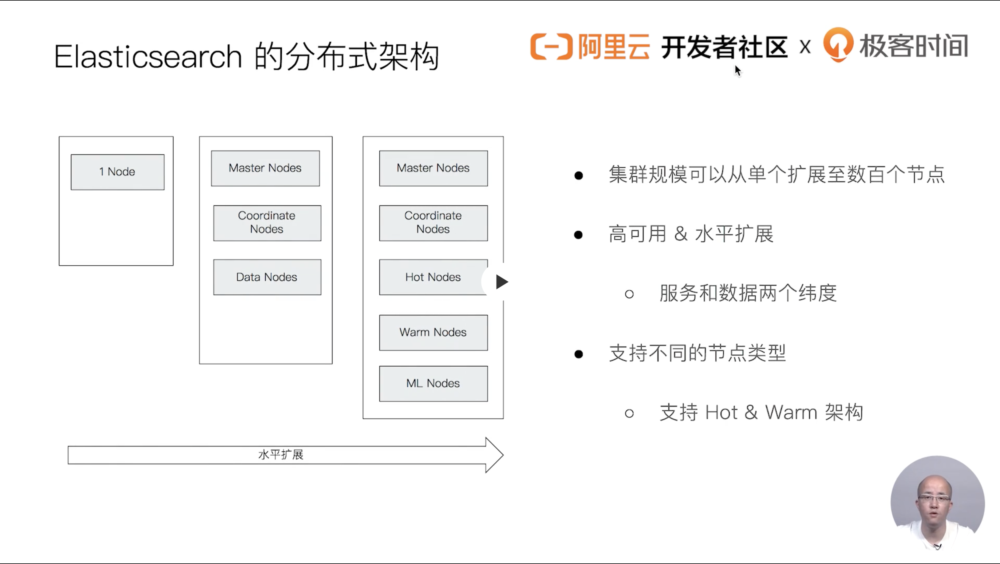</p>
<p>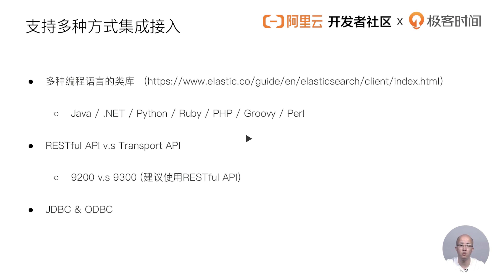</p>
<p>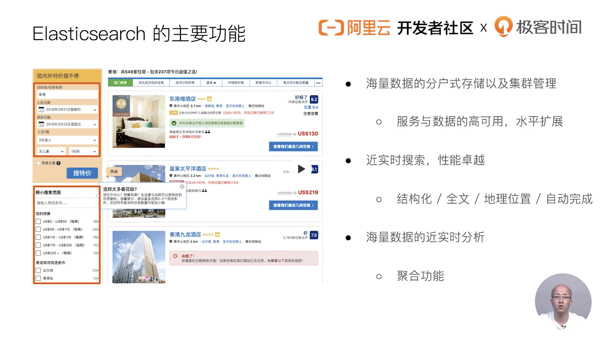</p>
<p>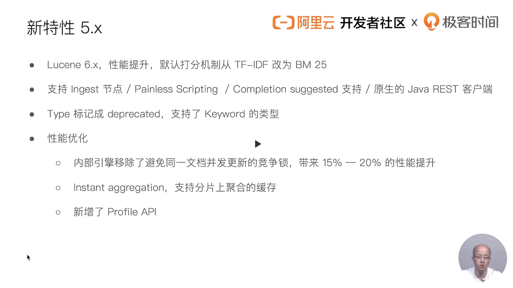</p>
<p>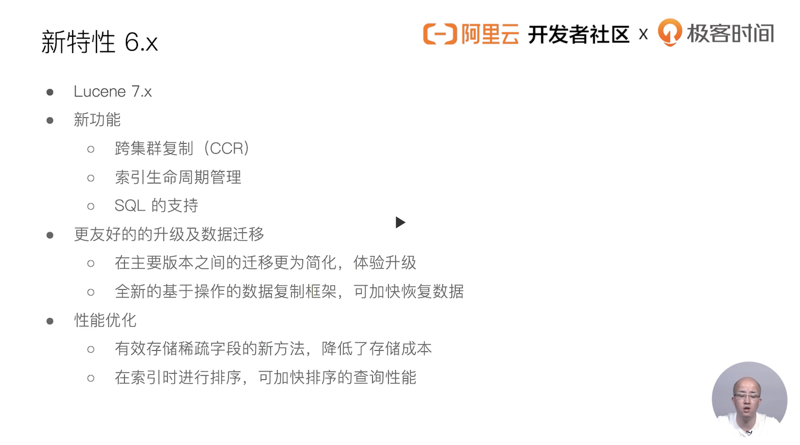</p>
<p>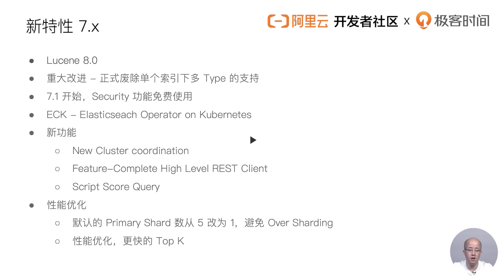</p>
<h2 id="04-Elastic-Stack家族成员及其应用场景"><a href="#04-Elastic-Stack家族成员及其应用场景" class="headerlink" title="04 | Elastic Stack家族成员及其应用场景"></a>04 | Elastic Stack家族成员及其应用场景</h2><p>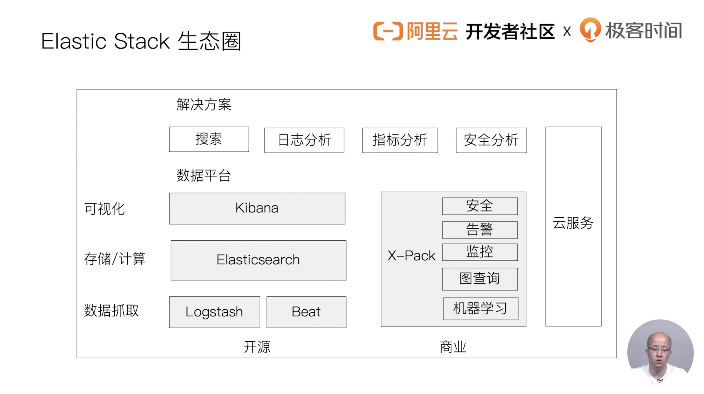</p>
<p>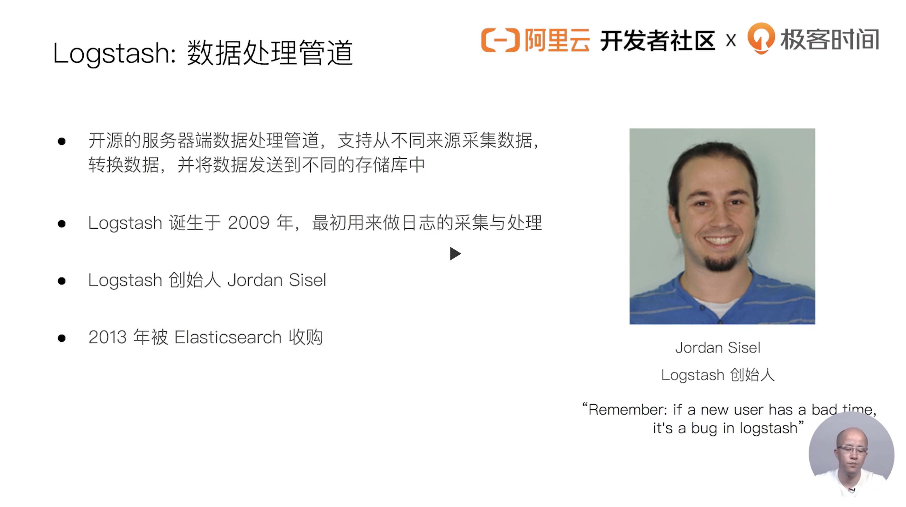</p>
<p>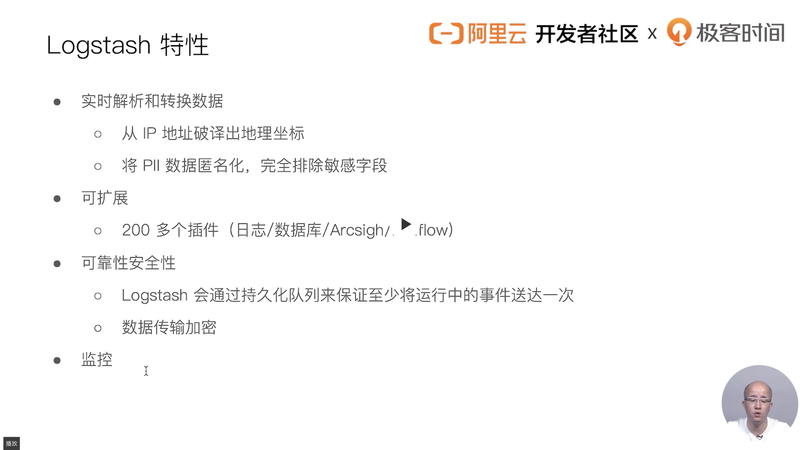</p>
<p>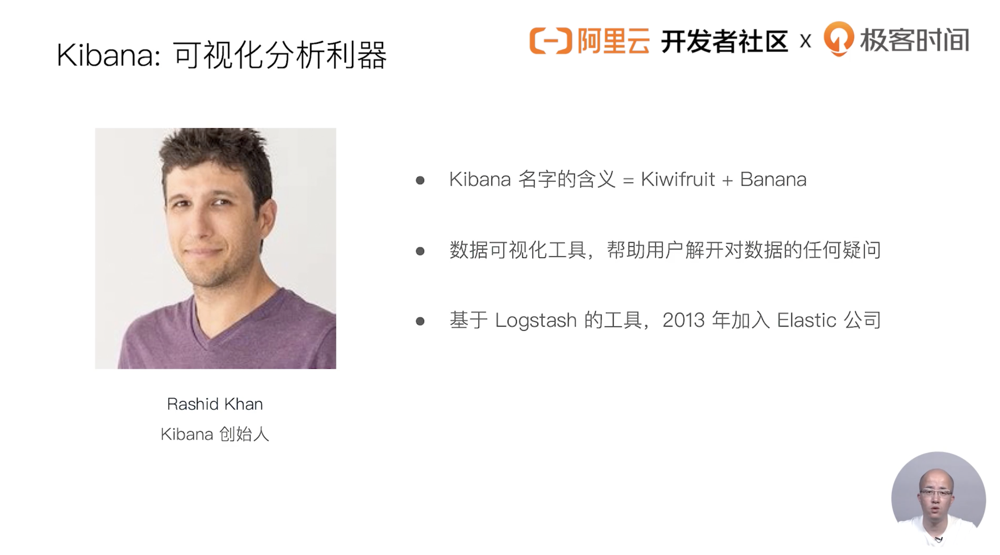</p>
<p>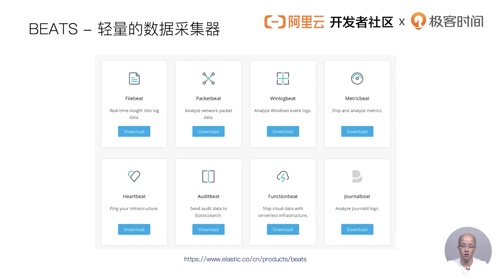</p>
<p>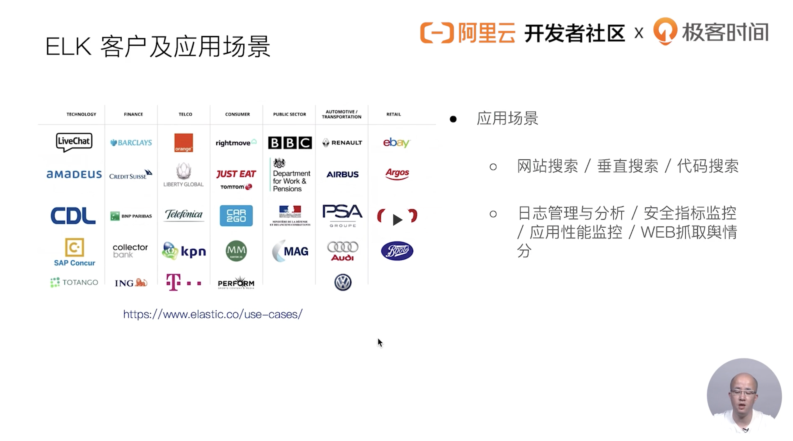</p>
<h2 id="05-Elasticsearch的安装与简单配置"><a href="#05-Elasticsearch的安装与简单配置" class="headerlink" title="05 | Elasticsearch的安装与简单配置"></a>05 | Elasticsearch的安装与简单配置</h2><p>手把手教会你如何在阿里云购买与配置es和如何在本地安装es，es插件，如何多节点运行</p>
<h2 id="06-Kibanan的安装与界面快速浏览"><a href="#06-Kibanan的安装与界面快速浏览" class="headerlink" title="06 | Kibanan的安装与界面快速浏览"></a>06 | Kibanan的安装与界面快速浏览</h2><p>在本机下载与安装kibana</p>
<h2 id="07-在Docker容器中运行Elasticsearch-Kibana和-Cerebro"><a href="#07-在Docker容器中运行Elasticsearch-Kibana和-Cerebro" class="headerlink" title="07 | 在Docker容器中运行Elasticsearch Kibana和 Cerebro"></a>07 | 在Docker容器中运行Elasticsearch Kibana和 Cerebro</h2>
      
      <!-- 打赏 -->
      
      <div id="reward-btn">
        打赏
      </div>
      
    </div>
    <footer class="article-footer">
      <a data-url="https://dingzhenkai.github.io/2020/03/22/elasticsearch%E5%85%AC%E5%BC%80%E8%AF%BE%E9%98%AE%E4%B8%80%E9%B8%A3/" data-id="ck83wo1bw0007mhj58bop63xx"
        class="article-share-link">分享</a>
      
  <ul class="article-tag-list" itemprop="keywords"><li class="article-tag-list-item"><a class="article-tag-list-link" href="/tags/elasticsearch/" rel="tag">elasticsearch</a></li></ul>

    </footer>

  </div>

  
  
  <nav class="article-nav">
    
      <a href="/2020/03/23/aliyun-logshipper%E9%85%8D%E7%BD%AE/" class="article-nav-link">
        <strong class="article-nav-caption">上一篇</strong>
        <div class="article-nav-title">
          
            aliyun_logshipper配置
          
        </div>
      </a>
    
    
      <a href="/2020/03/21/Cuttlefish%E4%BB%8B%E7%BB%8D/" class="article-nav-link">
        <strong class="article-nav-caption">下一篇</strong>
        <div class="article-nav-title">Cuttlefish介绍</div>
      </a>
    
  </nav>


  

  
  
<!-- valine评论 -->
<div id="vcomments-box">
    <div id="vcomments">
    </div>
</div>
<script src="//cdn1.lncld.net/static/js/3.0.4/av-min.js"></script>
<script src='https://cdn.jsdelivr.net/npm/valine@1.3.10/dist/Valine.min.js'></script>
<script>
    new Valine({
        el: '#vcomments',
        notify: false,
        verify: '',
        app_id: '',
        app_key: '',
        path: window.location.pathname,
        avatar: 'mp',
        placeholder: '给我的文章加点评论吧~',
        recordIP: true
    });
    const infoEle = document.querySelector('#vcomments .info');
    if (infoEle && infoEle.childNodes && infoEle.childNodes.length > 0) {
        infoEle.childNodes.forEach(function (item) {
            item.parentNode.removeChild(item);
        });
    }
</script>
<style>
    #vcomments-box {
        padding: 5px 30px;
    }

    @media screen and (max-width: 800px) {
        #vcomments-box {
            padding: 5px 0px;
        }
    }

    #vcomments-box #vcomments {
        background-color: #fff;
    }

    .v .vlist .vcard .vh {
        padding-right: 20px;
    }

    .v .vlist .vcard {
        padding-left: 10px;
    }
</style>

  

  
  
  

</article>
</section>
      <footer class="footer">
  <div class="outer">
    <ul class="list-inline">
      <li>
        &copy;
        2020
        Bonjour Ding
      </li>
      <li>
        
          Powered by
        
        
        <a href="https://hexo.io" target="_blank">Hexo</a> Theme <a href="https://github.com/Shen-Yu/hexo-theme-ayer" target="_blank">Ayer</a>
        
      </li>
    </ul>
    <ul class="list-inline">
      <li>
        
        
        <ul class="list-inline">
  <li>PV:<span id="busuanzi_value_page_pv"></span></li>
  <li>UV:<span id="busuanzi_value_site_uv"></span></li>
</ul>
        
      </li>
      <li>
        <!-- cnzz统计 -->
        
      </li>
    </ul>
  </div>
</footer>
    <div class="to_top">
        <div class="totop" id="totop">
  <i class="ri-arrow-up-line"></i>
</div>
      </div>
    </main>
      <aside class="sidebar">
        <button class="navbar-toggle"></button>
<nav class="navbar">
  
  <div class="logo">
    <a href="/"></a>
  </div>
  
  <ul class="nav nav-main">
    
    <li class="nav-item">
      <a class="nav-item-link" href="/">主页</a>
    </li>
    
    <li class="nav-item">
      <a class="nav-item-link" href="/archives">归档</a>
    </li>
    
    <li class="nav-item">
      <a class="nav-item-link" href="/categories">分类</a>
    </li>
    
    <li class="nav-item">
      <a class="nav-item-link" href="/tags">标签</a>
    </li>
    
    <li class="nav-item">
      <a class="nav-item-link" href="/2020/01/31/about">关于我</a>
    </li>
    
  </ul>
</nav>
<nav class="navbar navbar-bottom">
  <ul class="nav">
    <li class="nav-item">
      
      <a class="nav-item-link nav-item-search"  title="Search">
        <i class="ri-search-line"></i>
      </a>
      
      
    </li>
  </ul>
</nav>
<div class="search-form-wrap">
  <div class="local-search local-search-plugin">
  <input type="search" id="local-search-input" class="local-search-input" placeholder="Search...">
  <div id="local-search-result" class="local-search-result"></div>
</div>
</div>
      </aside>
      <div id="mask"></div>

<!-- #reward -->
<div id="reward">
  <span class="close"><i class="ri-close-line"></i></span>
  <p class="reward-p"><i class="ri-cup-line"></i>请我喝杯咖啡吧~</p>
  <div class="reward-box">
    
    <div class="reward-item">
      
      <span class="reward-type">支付宝</span>
    </div>
    
    
    <div class="reward-item">
      
      <span class="reward-type">微信</span>
    </div>
    
  </div>
</div>
      
<script src="/js/jquery-2.0.3.min.js"></script>


<script src="/js/jquery.justifiedGallery.min.js"></script>


<script src="/js/lazyload.min.js"></script>


<script src="/js/busuanzi-2.3.pure.min.js"></script>


<script src="/fancybox/jquery.fancybox.min.js"></script>


<script src="https://cdn.jsdelivr.net/npm/typed.js@2.0.11/lib/typed.min.js"></script>
<script>
  var typed = new Typed("#subtitle", {
    strings: ['芒焰藏于简单之中','江山如此多娇','会当击水三千里，自信人生二百年'],
    startDelay: 0,
    typeSpeed: 200,
    loop: true,
    backSpeed: 100,
    showCursor: true
    });
</script>


<script src="/js/tocbot.min.js"></script>

<script>
  // Tocbot_v4.7.0  http://tscanlin.github.io/tocbot/
  tocbot.init({
    tocSelector: '.tocbot',
    contentSelector: '.article-entry',
    headingSelector: 'h1, h2, h3, h4, h5, h6',
    hasInnerContainers: true,
    scrollSmooth: true,
    scrollContainer:'main',
    positionFixedSelector: '.tocbot',
    positionFixedClass: 'is-position-fixed',
    fixedSidebarOffset: 'auto',
    onClick: (e) => {
      $('.toc-link').removeClass('is-active-link');
      $(`a[href=${e.target.hash}]`).addClass('is-active-link');
      $(e.target.hash).scrollIntoView();
      return false;
    }
  });
</script>


<script>
  var ayerConfig = {
    mathjax: false
  }
</script>


<script src="/js/ayer.js"></script>


<script src="https://cdn.jsdelivr.net/npm/jquery-modal@0.9.2/jquery.modal.min.js"></script>
<link rel="stylesheet" href="https://cdn.jsdelivr.net/npm/jquery-modal@0.9.2/jquery.modal.min.css">


<!-- Root element of PhotoSwipe. Must have class pswp. -->
<div class="pswp" tabindex="-1" role="dialog" aria-hidden="true">

    <!-- Background of PhotoSwipe. 
         It's a separate element as animating opacity is faster than rgba(). -->
    <div class="pswp__bg"></div>

    <!-- Slides wrapper with overflow:hidden. -->
    <div class="pswp__scroll-wrap">

        <!-- Container that holds slides. 
            PhotoSwipe keeps only 3 of them in the DOM to save memory.
            Don't modify these 3 pswp__item elements, data is added later on. -->
        <div class="pswp__container">
            <div class="pswp__item"></div>
            <div class="pswp__item"></div>
            <div class="pswp__item"></div>
        </div>

        <!-- Default (PhotoSwipeUI_Default) interface on top of sliding area. Can be changed. -->
        <div class="pswp__ui pswp__ui--hidden">

            <div class="pswp__top-bar">

                <!--  Controls are self-explanatory. Order can be changed. -->

                <div class="pswp__counter"></div>

                <button class="pswp__button pswp__button--close" title="Close (Esc)"></button>

                <button class="pswp__button pswp__button--share" style="display:none" title="Share"></button>

                <button class="pswp__button pswp__button--fs" title="Toggle fullscreen"></button>

                <button class="pswp__button pswp__button--zoom" title="Zoom in/out"></button>

                <!-- Preloader demo http://codepen.io/dimsemenov/pen/yyBWoR -->
                <!-- element will get class pswp__preloader--active when preloader is running -->
                <div class="pswp__preloader">
                    <div class="pswp__preloader__icn">
                        <div class="pswp__preloader__cut">
                            <div class="pswp__preloader__donut"></div>
                        </div>
                    </div>
                </div>
            </div>

            <div class="pswp__share-modal pswp__share-modal--hidden pswp__single-tap">
                <div class="pswp__share-tooltip"></div>
            </div>

            <button class="pswp__button pswp__button--arrow--left" title="Previous (arrow left)">
            </button>

            <button class="pswp__button pswp__button--arrow--right" title="Next (arrow right)">
            </button>

            <div class="pswp__caption">
                <div class="pswp__caption__center"></div>
            </div>

        </div>

    </div>

</div>

<link rel="stylesheet" href="https://cdn.jsdelivr.net/npm/photoswipe@4.1.3/dist/photoswipe.min.css">
<link rel="stylesheet" href="https://cdn.jsdelivr.net/npm/photoswipe@4.1.3/dist/default-skin/default-skin.css">
<script src="https://cdn.jsdelivr.net/npm/photoswipe@4.1.3/dist/photoswipe.min.js"></script>
<script src="https://cdn.jsdelivr.net/npm/photoswipe@4.1.3/dist/photoswipe-ui-default.min.js"></script>

<script>
    function viewer_init() {
        let pswpElement = document.querySelectorAll('.pswp')[0];
        let $imgArr = document.querySelectorAll(('.article-entry img:not(.reward-img)'))

        $imgArr.forEach(($em, i) => {
            $em.onclick = () => {
                // slider展开状态
                // todo: 这样不好，后面改成状态
                if (document.querySelector('.left-col.show')) return
                let items = []
                $imgArr.forEach(($em2, i2) => {
                    let img = $em2.getAttribute('data-idx', i2)
                    let src = $em2.getAttribute('data-target') || $em2.getAttribute('src')
                    let title = $em2.getAttribute('alt')
                    // 获得原图尺寸
                    const image = new Image()
                    image.src = src
                    items.push({
                        src: src,
                        w: image.width || $em2.width,
                        h: image.height || $em2.height,
                        title: title
                    })
                })
                var gallery = new PhotoSwipe(pswpElement, PhotoSwipeUI_Default, items, {
                    index: parseInt(i)
                });
                gallery.init()
            }
        })
    }
    viewer_init()
</script>


<script type="text/javascript" src="https://js.users.51.la/20544303.js"></script>
  </div>
</body>

</html>